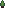

<ion-content>
  <div *ngIf="storeMenu" class="overlay">
    <ul>
      <li style="margin: 10px;"><h1 style="font-size: 40px;" class="gothic">Store</h1></li>
      <li style="color: white; margin: 0;">
        : {{money}} |
        : {{lifes / 2}} |
        : {{trees}}
      </li>
      <li *ngIf="money >= 4 && lifes <= 3">
        <a (click)="money = money - 4; componentsToDraw[0].life = lifes + 1; lifes = componentsToDraw[0].life;">
          4  -> 1/2 
        </a>
      </li>
      <li *ngIf="money >= 2">
        <a (click)="money = money - 2; trees = trees + 1">
          2   -> 1 
        </a>
      </li>
      <li *ngIf="trees >= 1">
        <a (click)="money = money + 2; trees = trees - 1">
          1   -> 2 
        </a>
      </li>
      <li>
        <a (click)="storeMenu = false; pauseResume(); saveGame();">Resume game</a>
      </li>
    </ul>
  </div>
  <div *ngIf="pauseMenu" class="overlay">
    <ul>
      <li><a (click)="pauseMenu = false; pauseResume()">Resume</a></li>
      <li><a (click)="muteUnmute()">{{muteText}}</a></li>
      <li><a (click)="pauseMenu = false; mainMenu = true">Return to main menu</a></li>
    </ul>
  </div>
  <div *ngIf="dead" class="overlay">
    <ul>
      <li><h1 style="font-size: 40px" class="gothic">Game Over</h1></li>
      <li><a (click)="dead = false; pauseResume()">Respawn</a></li>
      <li><a (click)="dead = false; mainMenu = true">Return to main menu</a></li>
    </ul>
  </div>
  <div *ngIf="mainMenu" class="overlay" id="main-menu">
    <ul>
        <li><h1 style="font-size: 40px">Okite</h1></li>
      <li *ngIf="gameCreated" (click)="loadGame()"><a>Continue game</a></li>
      <li><a (click)="createGame()">New game</a></li>
    </ul>
  </div>

  <div id="wave-hud">
    tekis: {{enemies}} | time to next wave: {{nextWaveSeconds}}
  </div>

  <div id="move-controls" class="controls">
    <div class="up" (touchstart)="holdMoveStart(0, 0, 1);" (touchend)="holdMoveStop(0)"></div>
    <div class="down" (touchstart)="holdMoveStart(1, 0, -1);" (touchend)="holdMoveStop(1)"></div>
    <div class="click" id="a-click" (touchstart)="touchStick($event)" (touchend)="touchEndStick($event)" (touchmove)="pullStick($event)"></div>
    <div class="left" (touchstart)="holdMoveStart(2, -1, 0);" (touchend)="holdMoveStop(2)"></div>
    <div class="right" (touchstart)="holdMoveStart(3, 1, 0);" (touchend)="holdMoveStop(3)"></div>
  </div>

  <div id="attack-controls" class="controls">
    <div class="up" (touchstart)="throwDagger(0,-1)"></div>
    <div class="down" (touchstart)="throwDagger(0,1)"></div>
    <div class="click" id="b-click" (touchstart)="showHud = 0; touchStick($event)" (touchend)="touchEndStick($event)" (touchmove)="pullStick($event)"></div>
    <div class="left" (touchstart)="throwDagger(-1,0)"></div>
    <div class="right" (touchstart)="throwDagger(1,0)"></div>
  </div>

  <div id="pause-control" (click)="pauseMenu = true; pauseResume()"></div>
  
  <canvas id="components" width="128px" height="128px"></canvas>

  <div id="map" #map>
    <canvas 
      class="chunk"
      id="canvas{{chunk.position.x}}{{chunk.position.y}}" 
      width="560px" 
      height="560px"
      *ngFor="let chunk of chunks" 
      [style.left.px]="chunk.position.x" 
      [style.top.px]="chunk.position.y">
    </canvas>
    <canvas 
      class="chunk enemies"
      id="enemies{{chunk.position.x}}{{chunk.position.y}}" 
      width="560px" 
      height="560px"
      *ngFor="let chunk of chunks" 
      [style.left.px]="chunk.position.x" 
      [style.top.px]="chunk.position.y">
    </canvas>
  </div>
</ion-content>